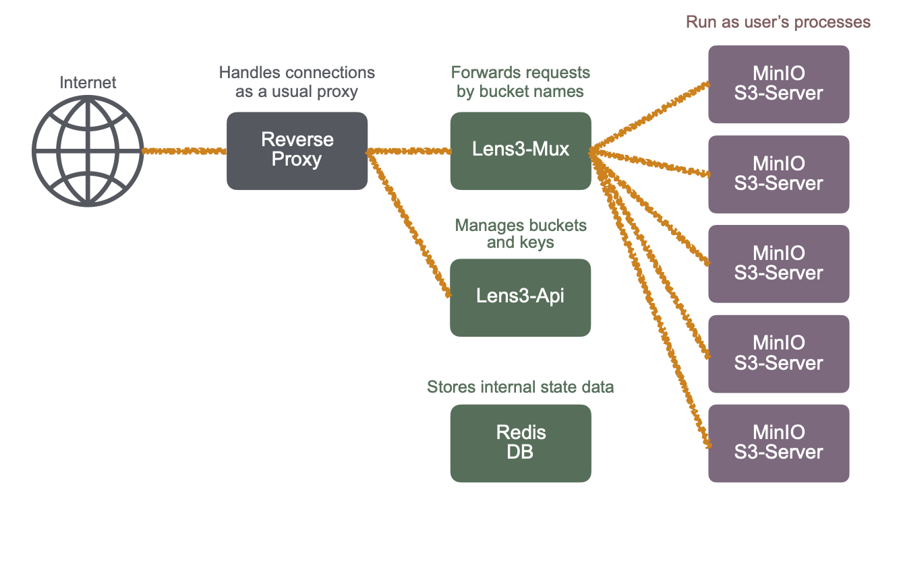

Fugaku AWS S3 Service Guide¶
This AWS S3 service on Fugaku allows users to import/export files in Fugaku’s filesystem. An S3 server will be started as a user’s process when configured buckets are accessed. It is user’s responsibility to setup buckets as well as to keep the secret keys secure.
This user guide describes simple usage of the S3 service on Fugaku. For questions, asking in Zendesk Community is a quicker way to contact maintainers of the service.
An Overview of the Service¶
Lens3 service does not provide buckets operations, such as listing or creating buckets. A bucket creation is naturally prohibited because Lens3 software distributes access requests with regard to a bucket accessed.
Thus, it is necessary to create buckets, first. The Web-UI is used to create buckets. In Lens3’s terminology, a pool refers to a folder in the filesystem where buckets are created. Create a pool, then create buckets in it.
Quick Setup of Buckets¶
The Lens3’s page in github.com has a good guide of the steps to create buckets. Please refer to it. Bucket names are global, that is, shared by all users. Please avoid short commonplace names.
https://github.com/RIKEN-RCCS/lens3/blob/main/v1/doc/user-guide.md
Example of Accessing Buckets by AWS CLI¶
AWS CLI Installation¶
An installation instruction of AWS CLI can be found in the following page.
The config file “~/.aws/config” may contain the following lines to specify the AWS S3 signature version (when it is necessary):
[default]
s3 =
signature_version = s3v4
The credentials file “~/.aws/credentials” should contain the lines like the following:
[default]
aws_access_key_id = WoRKvRhrdaMNSlkZcJCB
aws_secret_access_key = DzZv57R8wBIuVZdtAkE1uK1HoebLPMzKM6obA4IDqOhaLIBf
The credentials can be copied by the Web UI.
Listing files¶
Try a simple command:
aws --endpoint-url=https://lens3.fugaku.r-ccs.riken.jp s3 ls s3://some-bucket-name/
Replace some-bucket-name with an actual one, as usual. Note that the ‘-’ minus is not a legitimate character in a bucket name.
Uploading files¶
Then, try a command:
aws --endpoint-url=https://lens3.fugaku.r-ccs.riken.jp s3 cp sample.txt s3://some-bucket-name/
Downloading files¶
Or, try another command:
aws --endpoint-url=https://lens3.fugaku.r-ccs.riken.jp s3 cp s3://some-bucket-name/sample.txt
Compare the result.
Note
The service is experimental and is running on a virtual machine using a Lustre-NFS translator. The service is limited to 30 servers at a time (the number of pools simultaneously accessed). It will be upgraded to a more powerful platform when the service will become extensively used.
Currently, the list of users (UID’s in Fugaku) are registered in the service manually and periodically. The service may not be available immediately for newly registered users.